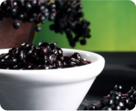
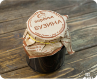

<main class="card-page">
	<div class="container">
		<div class="crumbs card-page__crumbs">
			<a href="index.html">
				Главная
			</a> -
			<a href="catalog.html">
				Каталог
			</a>
			- Варенье -
			<span class="crumbs--active">@@title</span>
		</div>
		<section class="card-page__content">
			<div class="card-page__images">
				
				
				
				
			</div>
			<div class="card-page__data">
				<h1 class="card-page__title title">@@title</h1>
				<div class="card-page__options">
					<div class="card-page__weight weight-checkbox">
						<label class="weight-checkbox__weight-light">
							<input type="radio" name="weight_balhav" value="150" checked>
							<span>150 гр</span>
						</label>
						<label class="weight-checkbox__weight-middle">
							<input type="radio" name="weight_balhav" value="200">
							<span>200 гр</span>
						</label>
						<label class="weight-checkbox__weight-big">
							<input type="radio" name="weight_balhav" value="250">
							<span>250 гр</span>
						</label>
					</div>
					<div class="card-page__price">
						@@price &nbsp; ₽
					</div>
					<div class="card-page__quantity-block quantity-block">
						<button class="quantity-block__btn-down">
							-
						</button>
						<span>1</span>
						<button class="quantity-block__btn-up">
							+
						</button>
					</div>
				</div>
				<div class="card-page__descr">
					@@descr
				</div>
				<div class="card-page__use-method">
					<span>Способ применения: </span>нет ограничений по количеству потребления
				</div>
				<div class="card-page__structure">
					<span>Состав:</span>
					<p>Ягода, вода, сахар</p>
					<p>Пищевая ценность на 100 г:</p>
					<p>белки - 3 г, жиры - 33 г, углеводы - 6 г</p>
					<p>Энергетическая ценность на 100 г: - 660 ккал</p>
				</div>
				<button class="btn btn--primary btn--add-cart">Добавить в корзину</button>
			</div>

		</section>
		<section class="card-page__product-pluses pluses">
			<div class=" pluses__item pluses__item--natural">
				
				<span>Только натуральные ингредиенты</span>
			</div>
			<div class="pluses__item pluses__item--good-quality">
				
				<span>Каждая ягода отобрана в ручную</span>
			</div>
			<div class="pluses__item pluses__item--delivery">
				
				<span>Доставка по Москве в день заказа</span>
			</div>
		</section>
		<section class="card-page__info info">
			<div class="info__item">
				<h2 class="info__title">
					Описание
				</h2>
				<p class="info__text">
					Ароматное варенье из чёрной бузины редко можно заметить на полках в магазинах, но среди местных жителей
					Кавказа оно любимо и популярно благодаря своим общеукрепляющим свойствам.
				</p>
			</div>
			<div class="info__item">
				<h2 class="info__title">
					Действие на организм
				</h2>
				<p class="info__text">
					Высокая концентрация клетчатки способствует выведению из организма «плохого» холестерина, что, в конечном
					счете, снижает вероятность развития заболеваний сердечно-сосудистой системы. Чашка чая с вареньем из бузины
					снимет умственную усталость, поможет взбодриться и поднимет настроение.
				</p>
			</div>
			<div class="info__item">
				<h2 class="info__title">
					Особенности
				</h2>
				<p class="info__text">
					Бузина также укрепляет иммунную систему, выводит болезнетворные вещества, и в результате организм начинает
					лучше сопротивляться бактериям и вирусам.
				</p>
			</div>
		</section>